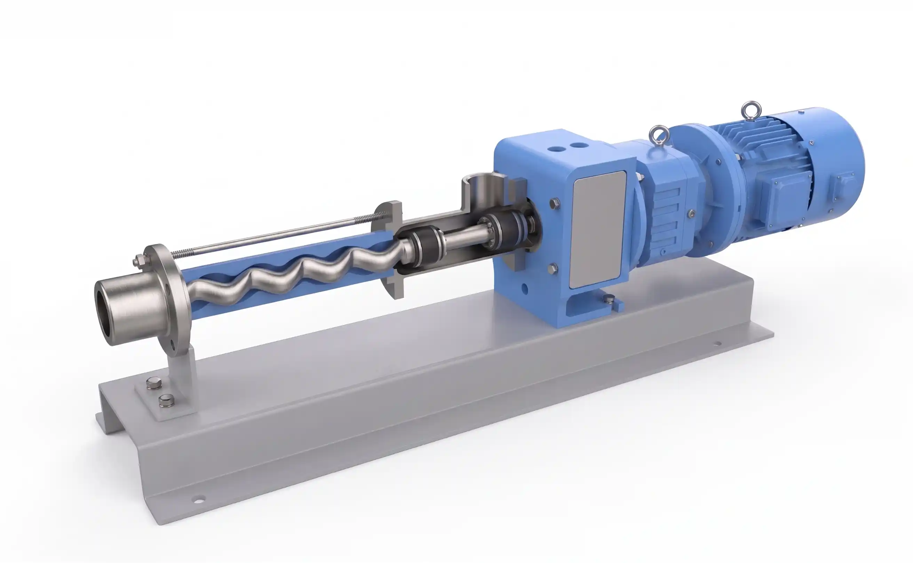
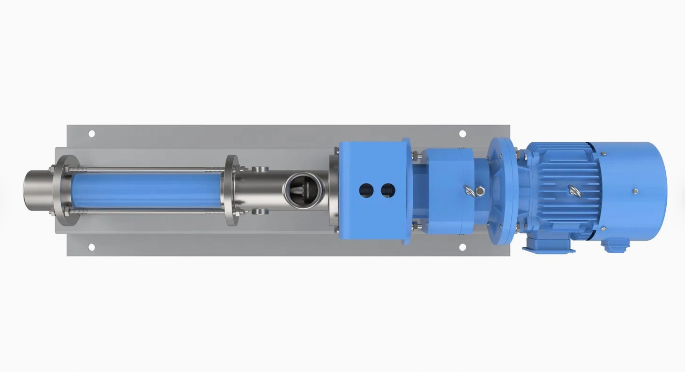

Descripción General
La Línea FFS combina los rigurosos estándares de pulido y limpieza de nuestra gama sanitaria con la exactitud milimétrica de una bomba dosificadora. Su diseño monoblock (conexión directa) resulta en un equipo de dimensiones reducidas, ideal para integrarse en skids o tableros de inyección donde el espacio es crítico.
Destaca por una alta precisión de medición (desviación inferior al 1%) y un bombeo extremadamente suave (low shear), sin pulsaciones, lo que protege la integridad de aditivos, saborizantes o enzimas. Al carecer de válvulas complejas, procesa fluidos viscosos e incluso aquellos con pequeñas partículas sólidas sin atascos.
Especificaciones Técnicas
| Rango de Capacidad | Desde 0.1 lts/h hasta 1000 lts/h (1 m³/h) |
|---|---|
| Presión de Descarga | Hasta 24 bar (2.4 MPa) |
| Precisión de Medición | Desviación < 1% (Proporcional a la velocidad) |
| Material del Cuerpo y Eje | Acero Inoxidable 304 / 316L |
| Terminación Superficial | Pulido Sanitario para industrias alimenticias y farmacéuticas |
| Tipo de Conexión | Uniones Rápidas (Clamp/Danesa) o Bridas Sanitarias |
| Diseño Constructivo | Conexión monoblock directa (bomba y accionamiento) |
- Alimentos y Bebidas: Inyección precisa de saborizantes, colorantes, vitaminas y enzimas en líneas continuas.
- Industria Láctea: Dosificación de cuajo, cultivos y aditivos líquidos con bajo cizallamiento.
- Cosmética y Farmacéutica: Microdosificación de esencias, aceites esenciales, lociones y cremas.
- Sistemas Compactos: Integración OEM en máquinas envasadoras y equipos de proceso automatizado.
El diseño de conexión directa (monoblock) y la estructura enchufable del conjunto rotor/estator hacen que el ensamblaje y desmontaje sean extremadamente simples. Al reducir la cantidad de componentes (como manchones y bases largas), se minimizan los tiempos de inactividad, los costos operativos y el peso total del equipo.
¿Por qué elegir la Línea FFS?
¿Necesita asistencia para configurar el accionamiento?
Contactar Ingeniería